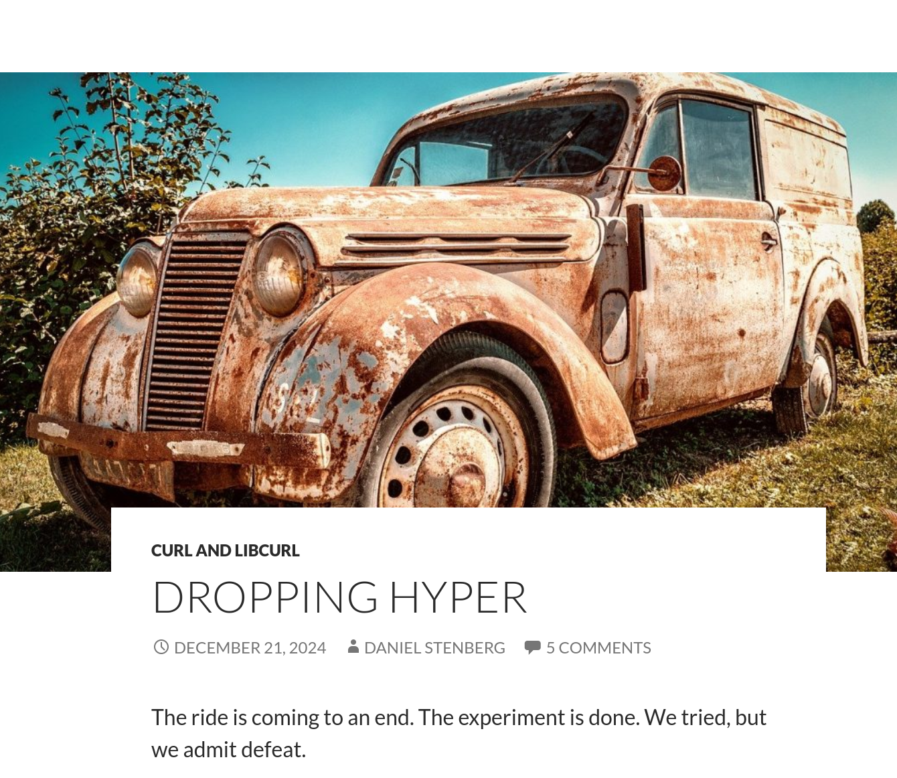

Rust против Си

На прошедших днях было две новости относительно Rust и его “противостоянию” Си. Одна про Linux, другая про Curl.
В линухе, как всегда, разгорались страсти в переписках. Одному из активных деятелей, связанных с развитием Rust в ядре, не дали внести изменения. Аргумент против — проще заниматься поддержкой чисто сишной подсистемы, без Rust. Результат: мейнтейнер Linux для Apple Silicon ушёл из апстрима и больше не хочет сабмитить патчи. Грустно, но закономерно.
Вторая новость, куда менее заметная и обсуждаемая — релиз Curl 8.12. В нём отказались от бэкенда Rust на Hyper. Проект несколько лет не мог найти людей, готовых совмещать работу над Си и Rust в рамках такого бэкенда. Ни пользователям, ни разработчикам это было не нужно.
Вот так вот. Вроде и язык модный-стильный-молодёжный. Вроде и оды по поводу безопасности поют. Но реальность более сурова. Количество кода на Си уже очень много. А совмещать Rust и Си в одном проекте бывает тяжело.
К слову. В последнее время многие пост-мортемы и ретроспективы стали содержать разделы, которые можно резюмировать как “а Rust это пофиксит?” или “это проблема Си”? И часто ответ отрицательный. Забавно.